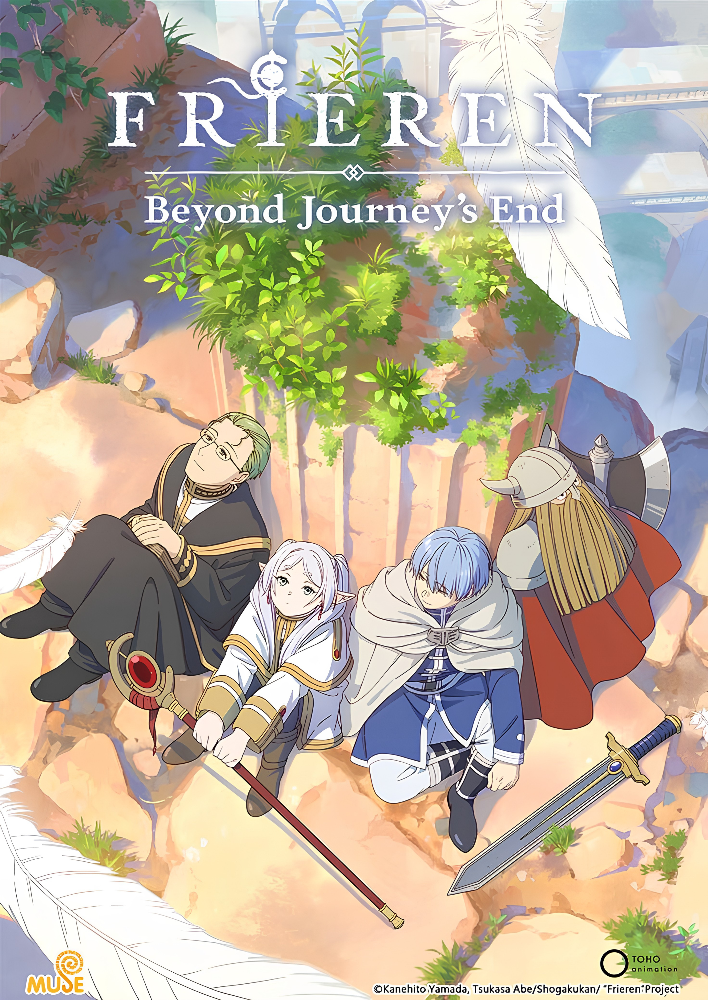
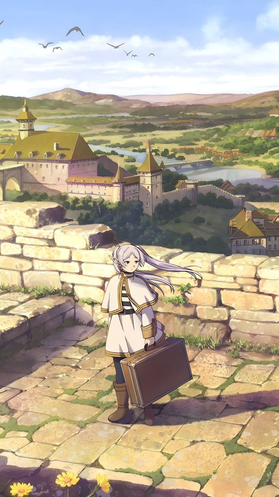
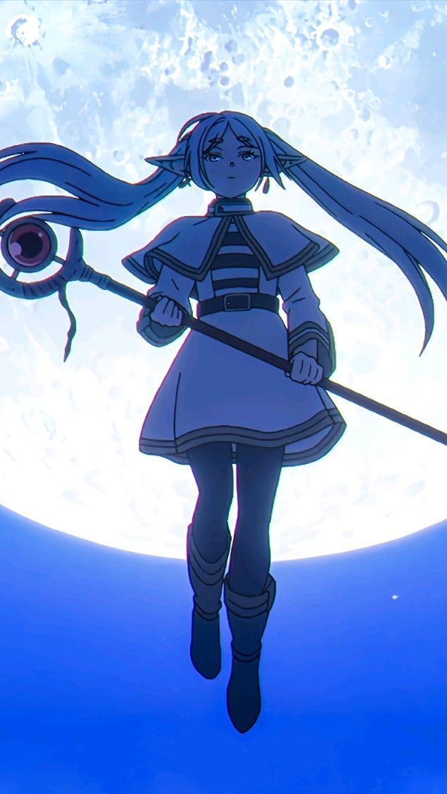
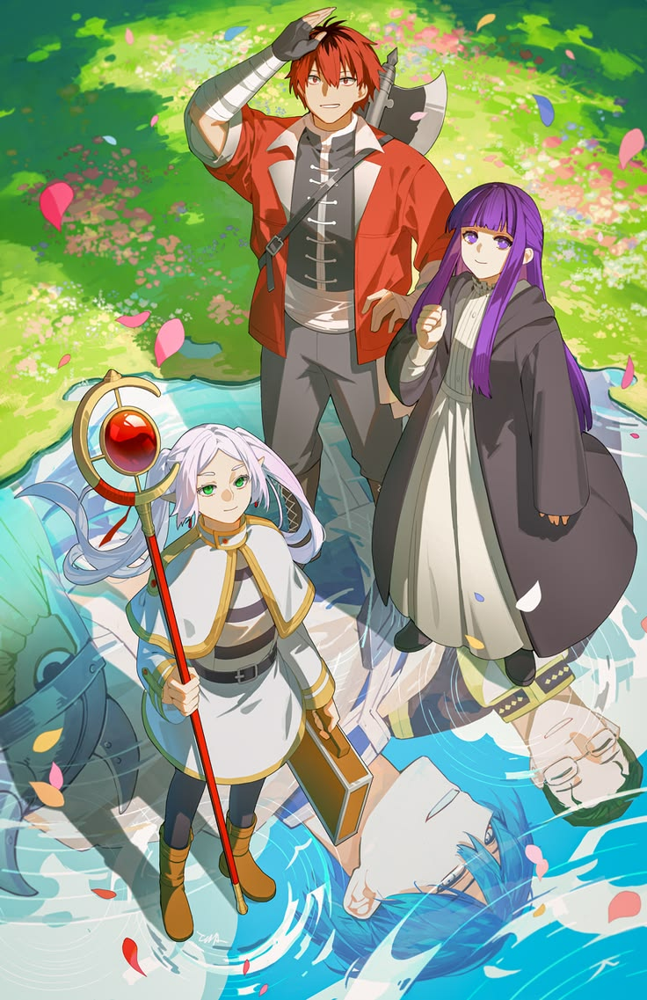
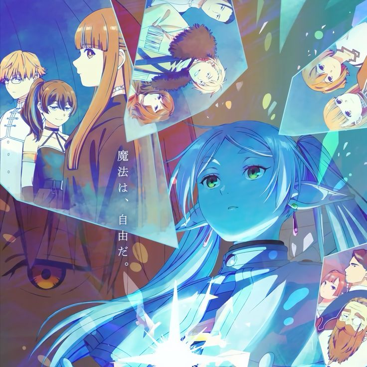
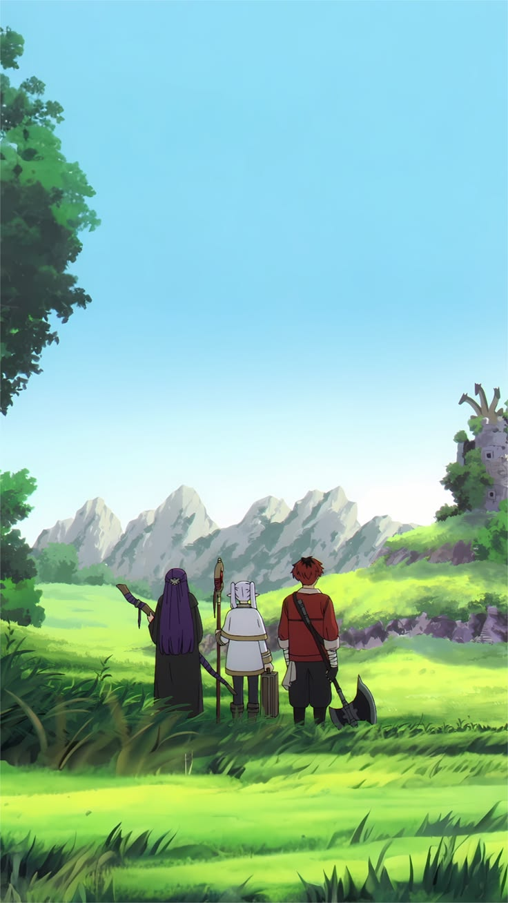

Arc After the Journey dimulai saat kelompok pahlawan berpisah setelah mengalahkan Raja Iblis. Sebagai elf, Frieren menganggap 10 tahun petualangan hanyalah waktu singkat dan pergi sendirian tanpa beban.Namun, saat kembali 50 tahun kemudian, ia harus menghadapi kenyataan pahit atas kematian Himmel sang Pahlawan yang sudah menua. Penyesalan karena tidak pernah mencoba mengenal manusia lebih dalam memicu Frieren untuk memulai perjalanan baru. Bersama murid barunya, Fern, ia kini berkelana demi memahami arti waktu dan hubungan manusia yang sebelumnya ia abaikan.
Read MoreDi arc Aura the Guillotine, konflik utama berpusat pada kembalinya salah satu jenderal Raja Iblis, Aura, yang mengancam wilayah utara dengan pasukan mayat hidupnya. Frieren harus berhadapan dengan Aura dalam duel sihir yang unik menggunakan "Timbangan Kepatuhan" (Scale of Obedience).Aura yang sombong mencoba menimbang mana miliknya melawan Frieren untuk menjadikannya budak. Namun, ia tidak menyadari bahwa Frieren telah melatih teknik menyembunyikan mana selama ratusan tahun. Saat Frieren melepaskan kekuatan aslinya, berat mana Frieren jauh melampaui Aura, yang akhirnya memaksa sang iblis melakukan bunuh diri dengan tangannya sendiri.
Read More

Arc The Order of the Knight memperkenalkan Stark, seorang pemuda penakut yang dianggap pahlawan oleh penduduk Desa Schwer karena berhasil menahan naga selama bertahun-tahun. Frieren dan Fern yang membutuhkan petarung garis depan kemudian mencoba merekrutnya.Konflik memuncak saat rahasia Stark terungkap: ia sebenarnya belum pernah bertarung dan hanya bertahan di desa tersebut karena rasa takut. Namun, atas dorongan Frieren, Stark akhirnya memberanikan diri menghadapi naga tersebut sendirian. Dengan satu tebasan kapak yang dahsyat, ia membuktikan bahwa latihan kerasnya selama ini tidak sia-sia, sekaligus resmi bergabung dalam perjalanan Frieren untuk memenuhi wasiat gurunya, Eisen.
Read MoreArc First Class Mage Exam menceritakan perjuangan Frieren dan Fern di kota Äußerst untuk mendapatkan sertifikat penyihir kelas satu agar bisa melanjutkan perjalanan ke wilayah utara. Di sini, mereka harus melewati serangkaian ujian mematikan yang diikuti oleh penyihir-penyihir hebat dari seluruh penjuru negeri.Konflik memuncak saat ujian kedua di dalam labirin bawah tanah, di mana para peserta harus melawan klon sempurna dari diri mereka sendiri. Frieren harus menghadapi replika dirinya yang memiliki kekuatan sihir absolut, sementara para penyihir muda lainnya dipaksa bekerja sama untuk bertahan hidup. Arc ini membuktikan bahwa kecerdikan dan kerja sama tim sama pentingnya dengan kekuatan sihir murni.
Read More

Arc The Journey to Ende (atau keberangkatan menuju wilayah utara) menjadi babak penutup di musim pertama. Setelah Fern resmi menjadi penyihir kelas satu, tim Frieren melanjutkan perjalanan panjang mereka menuju Ende, tempat yang diyakini sebagai lokasi Aureole atau negeri tempat jiwa beristirahat.Sepanjang perjalanan ini, suasana berubah menjadi lebih reflektif. Frieren, Fern, dan Stark mulai menerapkan pelajaran yang mereka dapatkan dari ujian sebelumnya sambil terus menghadapi sisa-sisa kekuatan iblis di wilayah utara yang keras. Arc ini menegaskan tujuan akhir mereka: bukan lagi untuk mengalahkan raja iblis, melainkan untuk bertemu kembali dan berbicara dengan roh Himmel di ujung dunia.
Read More